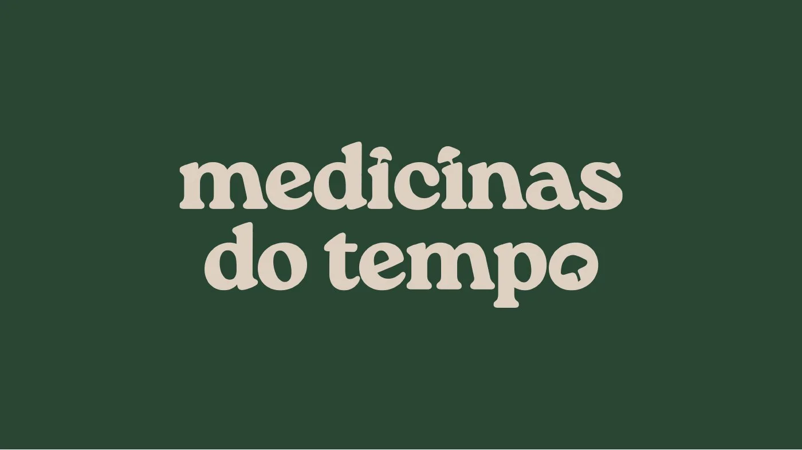
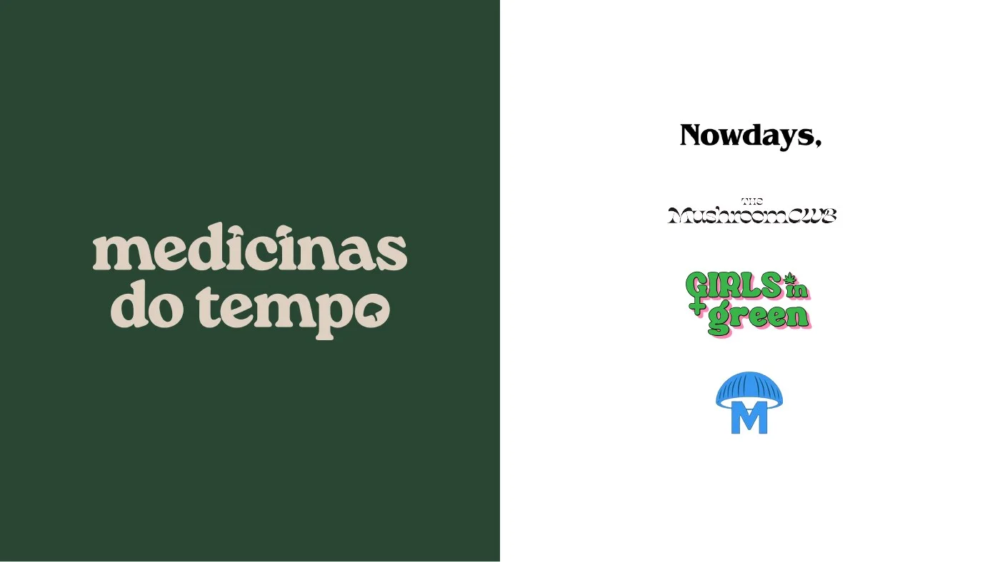
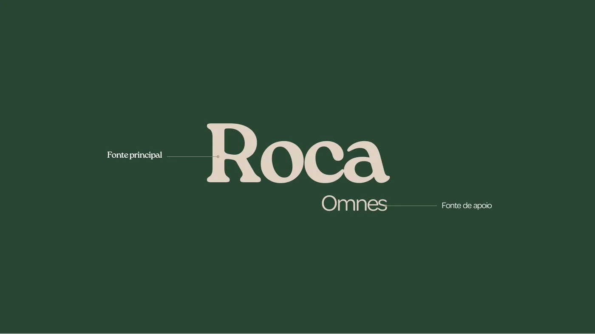
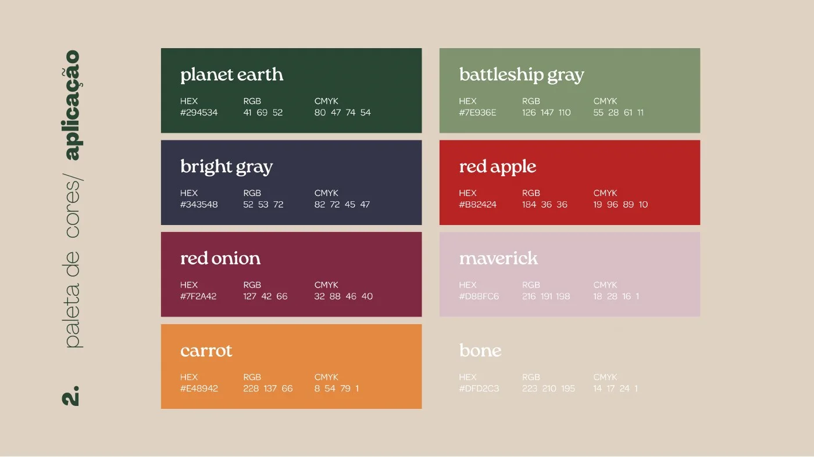
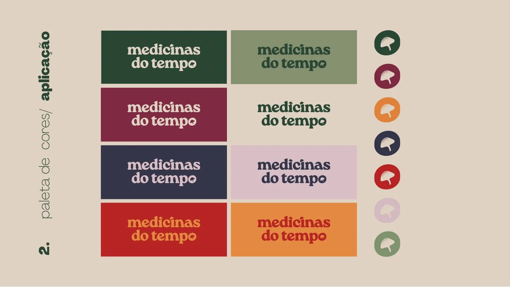
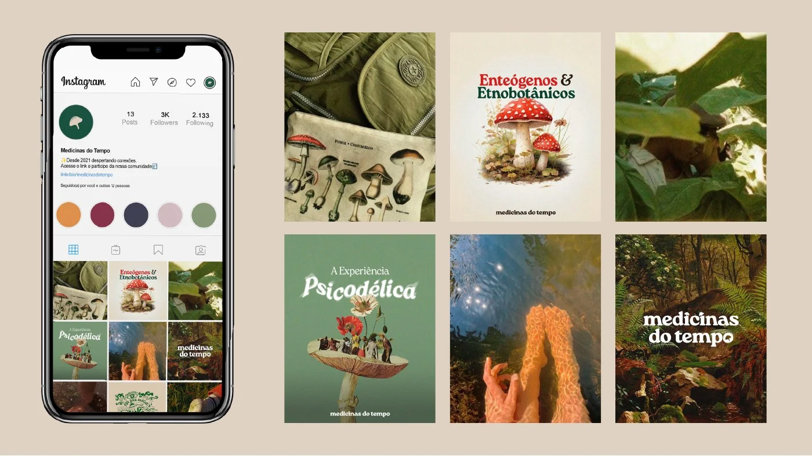
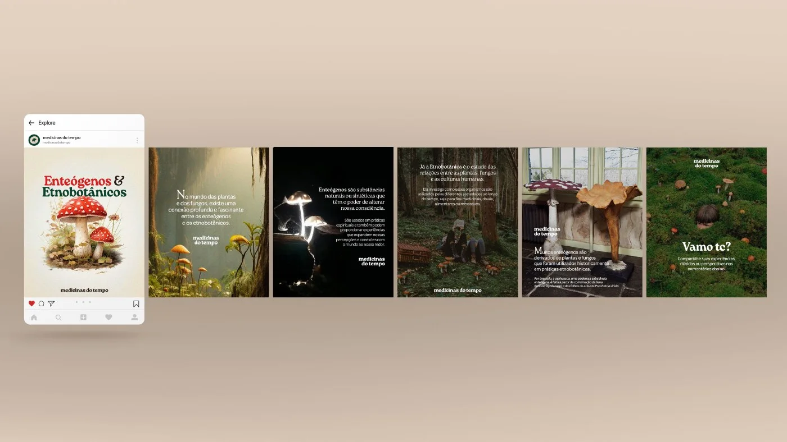
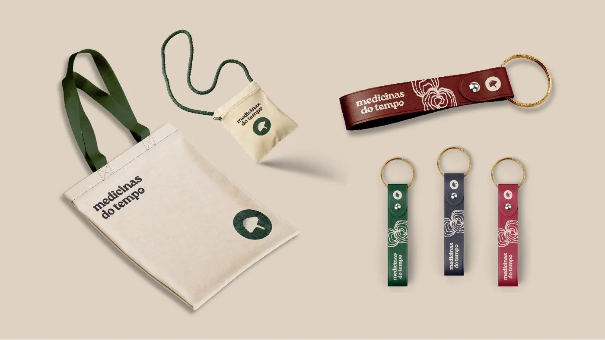
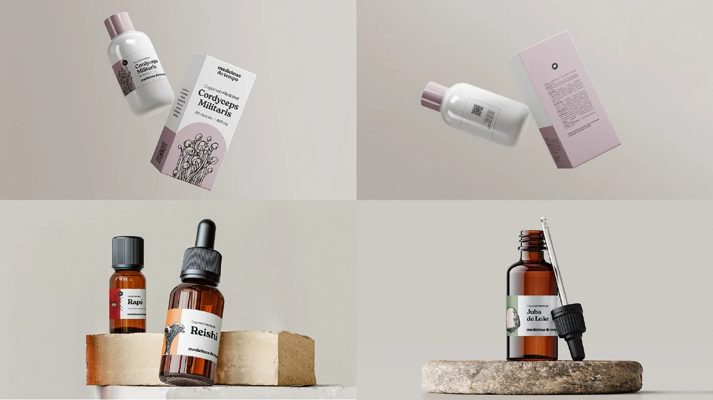
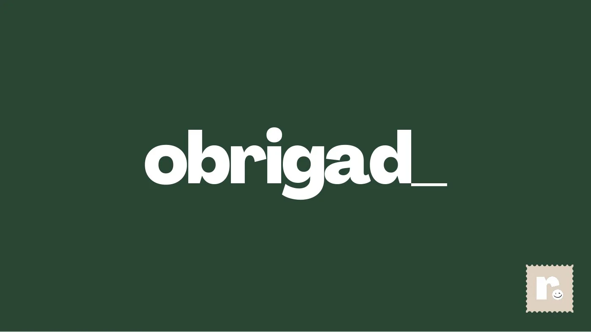

BRANDING
Medicinas do Tempo.
Uma marca sobre etnobotânica. O símbolo é um cogumelo de traço simples, a tipografia junta a Roca, de serifa macia, com a Omnes, e a paleta sai da terra: verde-musgo, vinho, cenoura e rosa seco. Desdobra numa submarca, a Tribo do Tempo, no feed e em objetos — ecobag, chaveiros e frascos.
- CLIENTE
- Medicinas do Tempo
- ANO
- 2026
- ENTREGAS
- Identidade Visual · Brand Book
- FERRAMENTAS
- Photoshop · Illustrator









